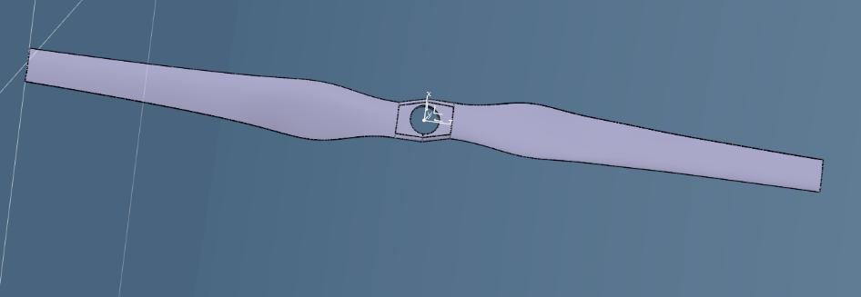
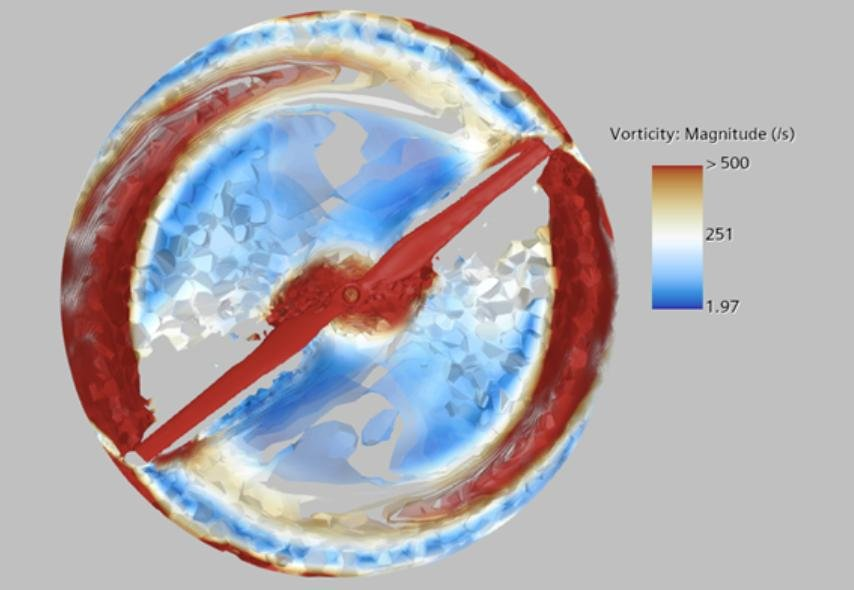
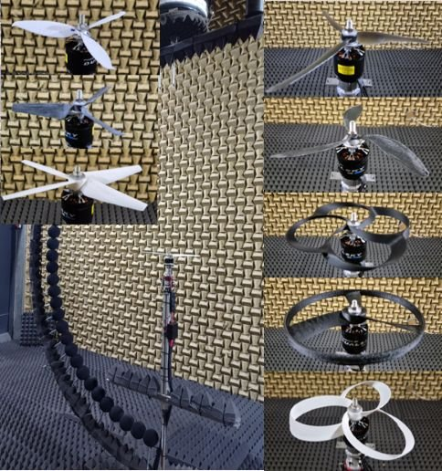
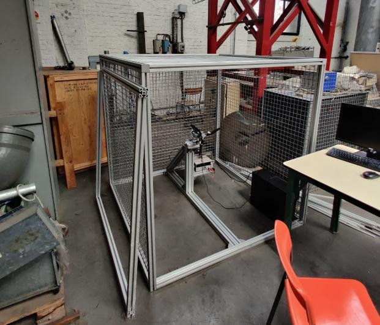

ONERA's student design challenge asked teams to design and manufacture a propeller optimized for noise reduction and energy-consumption efficiency.
I worked in a 5-student team covering the project's design, simulation, manufacturing, and testing phases, with my own contribution centered on the 3D structural design of the propeller.
The team used MATLAB and CATIA V5 for 3D modeling of the propeller structure, CFD for aerodynamic simulation, StarCCM+ for acoustic analysis, and SLA 3D printing to manufacture prototypes.




MATLAB, CATIA V5 (3D modeling), CFD (aerodynamic simulation), StarCCM+ (acoustic analysis), SLA 3D printing.
The team delivered a manufactured, tested propeller for the ONERA competition.